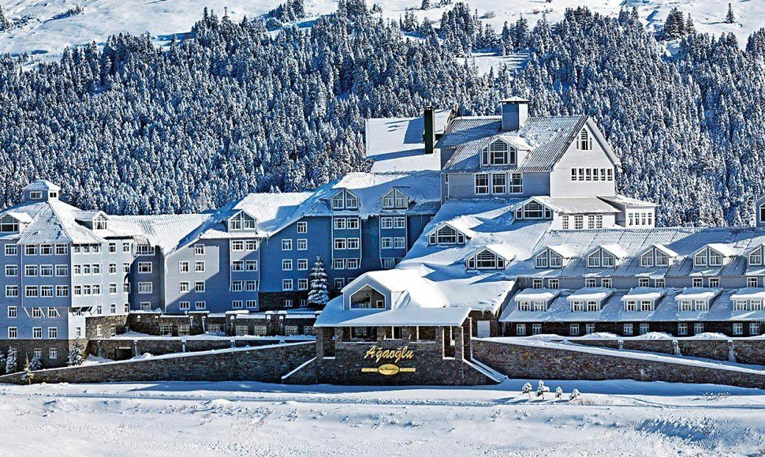
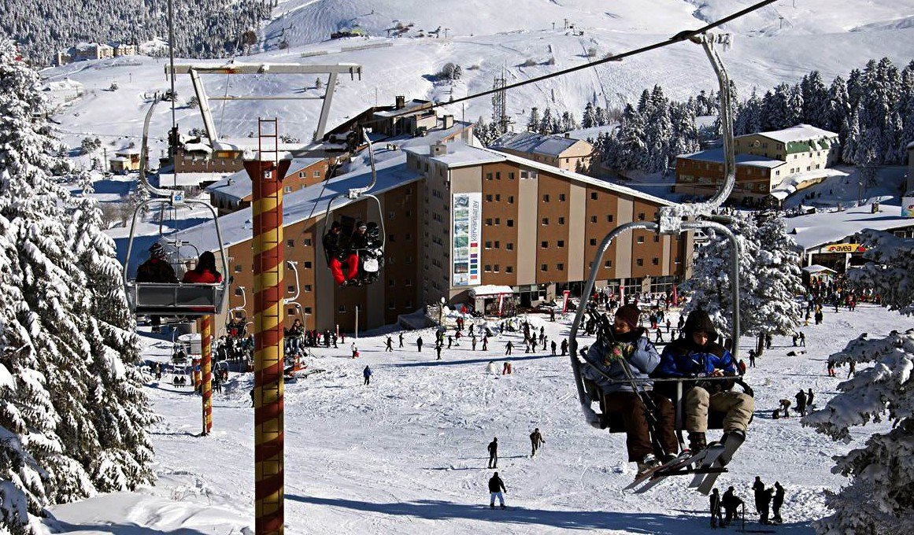
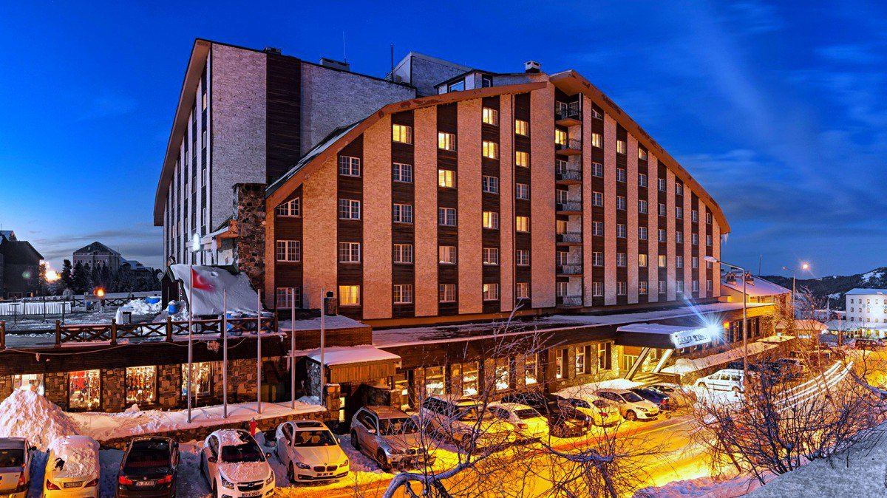
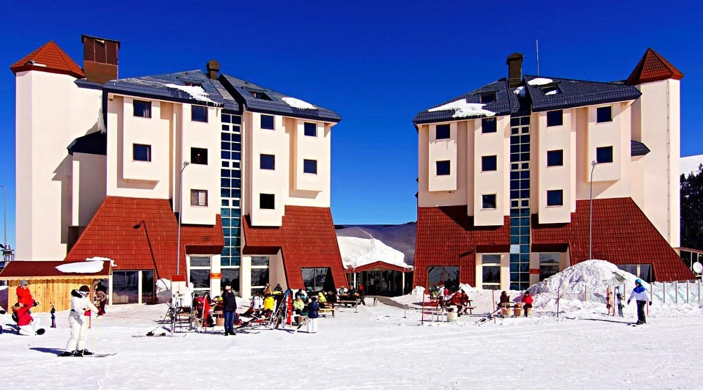
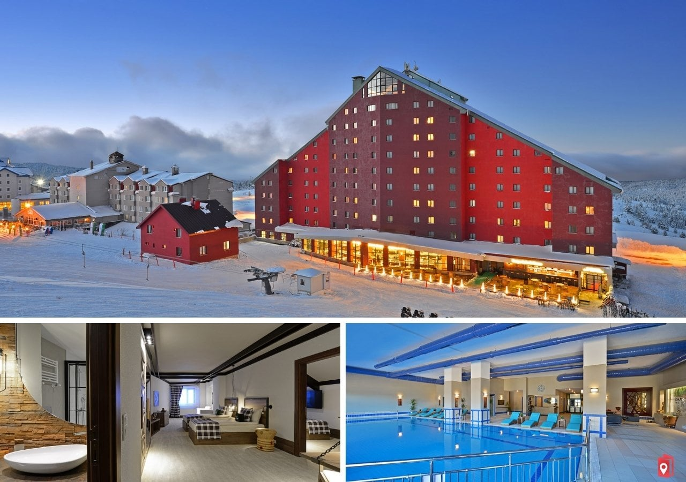
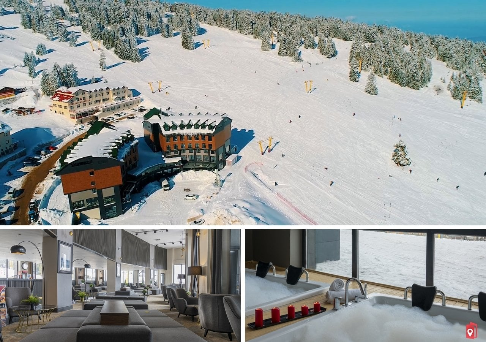
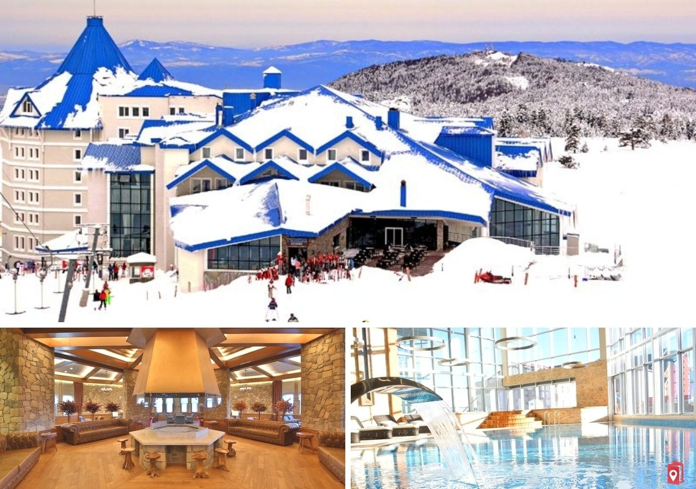
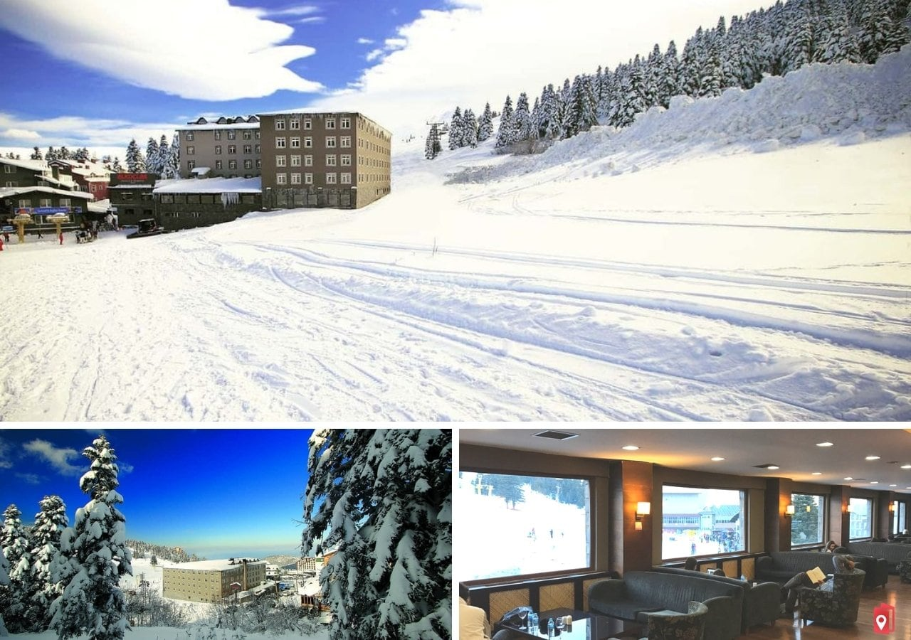
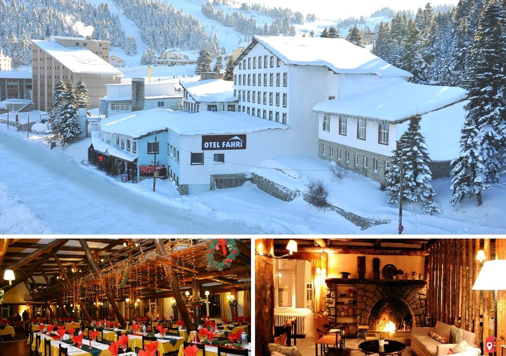

EN İYİ ULUDAĞ OTELLERİ
Uludağ’da konaklama için farklı alternatifler bulunmaktadır. Ülkemizde yer alan en iyi kayak otelleri arasında yer alan Uludağ kayak otelleri, sunduğu imkanlar ve Uludağ Kayak Merkezinin popülerliği ile bir adım daha önce çıkıyor. Yazımızda sizlere En iyi Uludağ otelleri ve fiyatları ile iletişim bilgilerini paylaşıyoruz.
Fiyatlar sezona ve doluluk durumuna göre değişiyor. Bölgede bulunan oteller hakkında kısa bilgiler ve rezervasyon ile fiyat bilgileri şu şekilde;
Ağaoğlu My Mountain Uludağ
Uludağ’da en çok beğenilen otellerden birisi Ağaoğlu My Mountain Uludağ’dır. Tesis, Bursa’ya 36 km uzaklıkta bulunmaktadır. Sabah, öğle, akşam ücretsiz olarak açık büfe yemek servisi bulunmaktadır. Tesisin belirlediği markalarla birlikte bazı yerli alkollü ve alkolsüz içecekler 07.30-22.00 saatleri arasında ücretsiz olarak verilmektedir. Tesis odalarına giriş 14.00da başlamaktadır.
Ağaoğlu My Mountain Uludağ Web Sitesi İçin Tıklayınız
Kervansaray Uludağ
Beğenilen ve tercih edilen bir diğer otel de Kervansaray Uludağ’dır. Bursa şehir merkezine 34 km uzaklıkta bulunan otel, 10.000 metrekare alan üzerine kurulmuştur. 2014 yılında tamamen yenilenmiştir. Yaz sezonunda hizmet verilmemektedir. Tesisin 163 adet odası bulunmaktadır.
Kervansaray Uludağ Web Sitesi İçin Tıklayınız
Grand Yazıcı Uludağ
Grand Yazıcı Uludağ da yine en çok beğenilen oteller arasında yer almaktadır. Bursa şehir merkezine 35 km uzaklıkta bulunmaktadır. Kış sezonunun en gözde otelleri arasında adını duyuran otel, 235 adet odaya sahiptir.
Otelin gecelik fiyatı 2 kişi için 1.550 TL ile 2.700 TL arasında değişiyor.
Grand Yazıcı Uludağ Web Sitesi İçin Tıklayınız
Monte Baia Uludağ
Monte Baia Uludağ, ikinci bölgede bulunan Bursa şehir merkezine uzaklığı 35 km olan bir tesistir. Sabiha Gökçen Havalimanına 169 km uzaklıkta yer alır. Şehir oteli lüksünü ve dağ havasını müşterilerine sunan bu otel, vermiş olduğu kaliteli hizmetle tercih edilmeye devam ediyor. Tesis yaz aylarında hizmet vermemektedir.
Odalara giriş 14.00da başlar çıkışlar ise en geç 12.00da olmalıdır. Bu tesiste evcil hayvan kabul edilmemektedir.
Monte Baia Uludağ Tanıtım Videosu
Monte Baia Uludağ Web Sitesi İçin Tıklayınız
Karinna Hotel Uludağ
Karinna Otel, Uludağ ikinci oteller bölgesinde bulunmaktadır. Bursa merkeze 35 km uzaklıktadır. Otelin bin kişilik bir restorantı bulunuyor. Sabah, öğle ve akşam yemekleri yiyebilirsiniz.Otelin toplam 250 odası bulunuyor. Princess suit, normal suit, Bağlantılı odalar, handicap room ve normal odalardan oluşan farklı konseptlerde ve büyüklüklerde odalara sahip. Otel odaları halı zemin ve dağ manzaralıdır. Otel Mini Club, çocuklar için oyun odası, baby sitting servisi, kapalı havuz ile çocuklu ailelerin tercih edebileceği bir tesis. Otelin SPA hizmetleri, konferans ve toplatın salonları bulunuyor.
Otelin gecelik fiyatı 2 kişi için 1.600 TL ile 1.900 TL arasında değişiyor.
Karinna Uludağ Web Sitesi İçin Tıklayınız
Trendlife Hotels Uludağ
Otel birinci bölgede yer alan Acemi Kayak Pistinin hemen yanında bulunuyor. Bu avantajı ile tercih edebileceğiniz bir tesis. Lüks ve modern bir mimariye ve dekorasyona sahip. Otelin sunduğu imlanlara baktığımızda, SPA hizmeti öne çıkıyor. Burada Jakuzi, hamam, sauna, Hidro Terapi ve aroma terapi uygulamaları var. Ayrıca Medikal bakımlar ile masaj hizmeti de bulunuyor. Hem kayak hem iş düşünenler için toplantı odası mevcut. Eğlence arayanlar içinse canlı müzik yer alıyor. Çocuklu aileler içinde Mini Club bulunuyor.
Otelin gecelik fiyatı 2 kişi için 1.600 TL ile 2.650 TL arasında değişiyor
Trendlife Hotels Web Sitesi İçin Tıklayınız
Bof Hotels Uludağ Ski Convention Resort
Modern ve rahat odalara sahip. Farklı konseptlerde ve boyutlarda odalar mevcut. Otelin restorant ve diğer alanlarıda lüks ve modern bir yapıya sahip. Otelin sunduğu hizmetler arasında Fitness merkezi, SPA, hamam ve kapalı havuz bulunuyor. Çocuklu aileler için ise mini club ve oyun salonu mevcut.
Bof Hotels Uludağ Kısa Tanıtım Filmi
Bof Hotels Uludağ Ski Conveniton Resort Web Sitesi İçin Tıklayınız
Alkoçlar Uludağ Otel
Alkoçlar Uludağ Otel, Uludağ birinci kayak bölgesinde yer almaktadır. Konum olarak iyi bir bölgede yer alıyor. Otel Bursa merkeze 35, Bursa Havalimanına ise 50 km uzaklıktadır. Otelin ücretsiz olarak sunduğu imkanlar arasında lobide 5 çayı ile ikramlar, gün boyu çay gibi ücretsiz hizmetleri mevcut. Çocuklu aileler için çocuklara mini kulüp ve Faber Castel faliyetleri sunuluyor.
Ücretli olarak ise kayak dersleri, kayak ekipman kiralama, bebek bakıcılığı gibi hitmeleri var.
Otel Fahri
Uludağ birinci oteller bölgesinde yer almaktadır. Otelin sunduğu imkanlar arasında Spa merkezi, fitnes salonu, gece kulübü, sauna ve bilardo bulunuyor. Oldukça sıcak bir ortamı bulunan otel, soğuktan ve kayaktan yorulan müşterilerine sıcak şömine ateşinde hoş bir ortam sunuyor.
Otel Fahri Web Sitesi İçin Tıklayınız